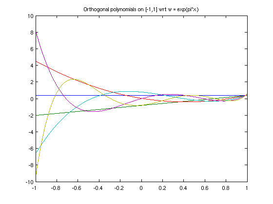

Orthogonal polynomials via the Lanczos process
Pedro Gonnet, 1st November 2011
(Chebfun example approx/OrthPolysLanczos.m)
format short e
The example approx/OrthPolys [2] discusses orthogonal polynomials, defined by the condition
b
/
| w(x) P_j(x) P_k(x) dx = < P_j, P_k > = 0 for all j not equal k
/
aAs mentioned there, Chebfun has commands LEGPOLY, CHEBPOLY, LAGPOLY, HERMPOLY for computing some standard cases.
Here, instead of Gram-Schmidt, we construct some of these polynomials via a three-term recurrence relation
gamma(k+1)*P_k+1(x) = (x - beta(k))*P_k(x) - gamma(k)*P_k-1(x)
where the coefficients gamma(k) and beta(k) are either known in advance or computed from
gamma(k) = < x*P_k-1 , P_k >, beta(k) = < x*P_k , P_k >.
Given any positive weight function w(x), we can construct both the polynomials P_k(x) and the recurrence coefficients beta(k) and gamma(k) using the Lanczos algorithm [1].
Whereas the Gram-Schmidt process requires O(n^2) evaluations of the inner product to compute the n first polynomials, the Lanczos process requires only two such evaluations per polynomial. Furthermore, the three-term recurrence coefficients can be used to construct a Gaussian quadrature rule for the given weight function w(x).
We start by initializing the parameters of this set of polynomials, e.g. the variable x in the interval [-1,1], the weight function in that same interval as well as the highest-degree polynomial we wish to construct.
x = chebfun( 'x' , [-1,1] );
w = exp(pi*x);
N = 5;
We then initialize the recursion by constructing the first two polynomials and their recurrence coefficients explicitly.
P = chebfun( 1./sqrt(sum(w)) , domain(x) ); v = x.*P; beta(1) = sum(w.*v.*P); v = v - beta(1)*P; gamma(1) = sqrt(sum( w.*v.^2 )); P(:,2) = v / gamma(1);
The remaining polynomials and coefficients can be computed iteratively using the Lanczos process.
for k=2:N v = x.*P(:,k) - gamma(k-1)*P(:,k-1); beta(k) = sum(w.*v.*P(:,k)); v = v - beta(k)*P(:,k); gamma(k) = sqrt(sum( w.*v.^2 )); P(:,k+1) = v / gamma(k); end
We can now plot these polynomials
figure
plot(P)
title('Orthogonal polynomials on [-1,1] wrt w = exp(pi*x)');
 and verify that they are indeed orthogonal with respect to w.
W = repmat(w,1,N+1); I = P'*(W.*P); err = norm(I-eye(N+1))
err = 2.0425e-14
Since, along with the polynomials, we have also computed the coefficients beta and gamma of the three-term recurrence relation, we can also construct Gaussian quadrature rules with respect to the weight function w using the Golub-Welsch algorithm [3]. For N points, this is
J = diag(beta) + diag(gamma(1:N-1),-1) + diag(gamma(1:N-1),+1) [V,D] = eig( J ); xi = diag( D ); wk = (2*V(1,:).^2)'; [ xi , wk ]
J =
6.8543e-01 3.0631e-01 0 0 0
3.0631e-01 1.5836e-01 4.9306e-01 0 0
0 4.9306e-01 -2.4896e-02 5.1638e-01 0
0 0 5.1638e-01 -1.7956e-02 5.0738e-01
0 0 0 5.0738e-01 -6.5923e-03
ans =
-8.2685e-01 8.3551e-03
-2.9103e-01 6.4620e-02
2.7149e-01 3.2433e-01
6.9835e-01 8.2708e-01
9.4239e-01 7.7562e-01
We can verify that the nodes are indeed the roots of the Nth orthogonal polynomial:
norm( xi - roots(P(:,N+1)) )
ans = 1.4347e-15
References:
[1] http://en.wikipedia.org/wiki/Lanczos_algorithm
[2] http://www.maths.ox.ac.uk/chebfun/examples/approx/html/OrthPolys.shtml
[3] G. H. Golub and J. H. Welsch, Calculation of Gauss quadrature rules, Math. Comp. 23 (1969), 221--230.